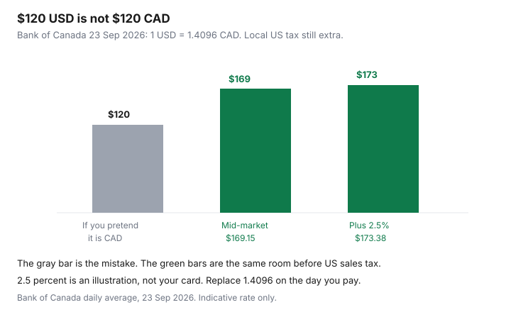

Travel · Canada
US Trips from Canada: Fly, Drive, or Cross the Border—Budget and Time Trade-offs
A US weekend looks cheap because the hotel site is in US dollars and the menu does not include tax or a tip. Canadian households then add a border wait or a bag fee and discover the trip. This page is the conversion and the clock: what a US price becomes in Canadian dollars, and when driving, flying, or mixing the two is the better use of a day. It is not a card ranking, and it is not a travel-medical policy.
Disclosure: Multi-currency cards and FX products are an offer type. Saving Optimizer does not claim a card partnership and does not rank cards. The 2.5% figure is the illustration already used on the FX guide, not a quote from your issuer. The US dollar rate below is the Bank of Canada daily average for 23 Sep 2026. Education only.
Key takeaways
- Bank of Canada, 23 Sep 2026: 1 US dollar = 1.4096 Canadian dollars. A $120 USD room is about $169 CAD before local tax and before any card markup.
- A 2.5% issuer markup on that room adds about $4. Decline dynamic currency conversion. The full ATM and card method is the FX guide.
- Land-border waits are a same-day fact from CBSA, not a number this page invents. Compare door-to-door hours with a flight’s security and ground time.
- NEXUS is $120 USD for five years, and free under 18 when a parent is a member. The break-even is the NEXUS guide. One vacation does not pay for it.
- Add sales tax and a restaurant tip as lines. A planning norm of 18–20% before tax is common in US cities. It is not a statute. Roaming is whatever your carrier charges for those days. Price it before you land.
- A fare from a US airport can beat a fare from YYZ or YVR only after FX, the border, parking or a one-way car, and the drive. Write those lines. Do not trust a headline fare.
- Provincial health plans are not a US hospital policy. Buy that decision on the Insurance guide.
CAD→USD mental math and why “cheap US hotels” still cost more after FX
Move every US price into Canadian dollars before you compare it with a weekend in Canada. The Bank of Canada’s daily average is an indicative rate from financial institutions, published on business days. It is not the rate printed on your card statement. On 23 Sep 2026 the US dollar was 1.4096.
| US sticker | CAD at 1.4096 | CAD if a 2.5% markup also applies |
|---|---|---|
| $80 | $112.77 | $115.59 |
| $120 hotel night | $169.15 | $173.38 |
| $200 | $281.92 | $288.97 |
| $120 NEXUS fee | $169.15 | Pay the fee in USD. Do not put it on a markup card if you can avoid it. |

Replace 1.4096 with the rate on the day you pay. A rate of 1.36, which is a different year, would make the same $120 room about $163 before markup. The habit is the multiplication. The souvenir rate from a previous trip is how the budget lies. If the hotel site offers to charge you in Canadian dollars at its own rate, that is dynamic currency conversion. The FX guide’s rule is to decline it and pay in US dollars on a card whose markup you already know.
Then put the Canadian city weekend beside it, tax-in, from the staycation template. A US city that “only” costs $120 a night is in the same band as a Canadian room after tax once FX is applied. The US trip can still be the one you want. It is not automatically the cheaper one.
Land border wait times vs flying into a US hub
CBSA publishes land-border wait times. Read them the morning you travel, for the crossing you will use, and treat a quiet Wednesday screenshot as a clue rather than a guarantee. A holiday Monday is a different border. This page will not print an average wait, because an average is how people miss a reservation.
Door-to-door is the comparison that matters. Driving: home to the crossing, the wait, then the US drive to the hotel, including a stop you will actually make. Flying: home to the Canadian airport, the ride that the airport-access guide prices, security, the flight, then a US airport that may be as far from downtown as your own is. A one-hour flight with a two-hour security cushion and a $40 US ground trip can lose to a three-hour drive with a 20-minute wait. It can also win if the wait is two hours and the mountain pass is the alternative.
Write the hours in the same column as the dollars. A household that has one weekend does not have a “free” Saturday morning spent in a lineup. If the hours are the scarce thing, fly. If the car is how you will see the place, drive, and check the wait before you leave the driveway.
NEXUS value for frequent cross-border leisure (cross-link Passport/NEXUS cluster)
NEXUS is the trusted-traveller card for people who will cross often enough to care. The processing fee on the CBSA pages already used by this site is $120 USD, non-refundable, for five years. Children under 18 pay no fee when a parent or legal guardian applies at the same time or is already a member. Everyone who wants the lane needs their own card. The interview calendar, the passport update, and the hours you personally save are worked on the NEXUS break-even. Do not rebuild them here.
For a single leisure weekend, $120 USD is about $169 CAD at the 23 Sep 2026 rate, before you have used the card once. That is a poor buy the month before one vacation. For a household that crosses several times a year for five years, the same fee is a few dollars a trip, and the value is the hours, which only you can count. The passport has to be valid, and a new passport means an in-person NEXUS update. That sequence is the passport guide. Book the booklet before you book a non-refundable US fare.
NEXUS is also one way into CATSA’s Verified Traveller lanes on the Canadian departure. That is a security-line benefit, not a discount on the fare. The packing rules that still apply are the liquids guide.
Sales tax, tipping norms, and cell roaming as budget lines
US menu and hotel prices are before the till. State and city sales taxes differ, and a hotel can add an occupancy tax that is not the same rate as a restaurant. Ask the checkout for the tax-in total the way you would in Canada. A $120 room that becomes $140 after local tax is $140 USD, then about $197 CAD at 1.4096, before a card markup. The “cheap” adjective does not survive that sentence.
Restaurant tips are a budget line, not a surprise. In many US cities a planning norm is 18–20% on the pre-tax bill. That is a habit, not a law, and a bill may already include a gratuity for a large party. Read the bill. On a $80 dinner, 20% is $16 USD, about $23 CAD at the same rate. Two dinners and a lunch are a real row. Do not hide them in “walking-around money” and then wonder where the cash went.
Cell roaming is the quiet daily fee. Before you land, price your carrier’s US pass for the number of days you will be there, or decide the phone stays on Wi-Fi. This page does not invent a carrier’s daily rate. Put the number from your own account on the sheet. A family of four with four phones is four passes. Maps downloaded on Wi-Fi are the alternative if the pass is the thing that makes the weekend silly.
When a US-origin flight + land return beats departing YYZ/YVR
Sometimes the cheaper seat is from a US airport you can reach by car: Buffalo, Bellingham, Seattle, or whatever field is actually across your border. It wins only when the full loop is cheaper and the hours are acceptable. The loop is:
- The US fare, converted at the day’s rate, plus bags. Airline bag rules are the bag guide. When to buy the Canadian-origin fare you are comparing against is when to book.
- The drive down, the border wait, parking at the US airport for the whole trip or a one-way rental back, and the return border.
- A land return that is not the same as the outbound flight. If you fly home into Canada, you are not doing this loop. You are comparing two flights.
Run it only if you will actually park or ride that US airport. A fare that saves $150 CAD and costs a night in a border hotel because you missed the last reasonable crossing is not a save. One-way rentals have drop fees. Put the drop fee on the sheet before you call the loop clever. If the numbers are close, depart from the Canadian airport and keep the weekend.
Insurance and health-care gap reminder—detail lives under Insurance travel medical
Provincial plans pay a thin, capped amount for care outside Canada. A US emergency is not a Canadian hospital bill. The dollar caps, the stability wording, and how to read a certificate are on the Insurance guide, provincial gaps abroad. Credit-card medical certificates have their own limits — age, trip length, and who paid for the trip — on that Insurance page. This travel page does not shop policies and does not rank cards.
Put the premium you choose beside the converted hotel total. A US weekend that ignores the premium is not finished. If you will not buy the coverage, you are self-insuring the gap the Insurance guide describes. That is a decision. It is not a saving until you have looked at the cap.
Sources & date stamps
- Bank of Canada daily average exchange rates — US dollar 1.4096 on 23 Sep 2026. Indicative. Read 24 Sep 2026.
- CBSA NEXUS fee of $120 USD for five years, and the under-18 rule, as already dated on this site’s NEXUS guide. Land wait times: use the live CBSA tool the morning you travel. No average wait is stated here.
- Issuer markup illustration of 2.5% — the method on this site’s FX guide, not a specific card.
Frequently asked questions
How do I turn a US hotel price into Canadian dollars?
Multiply by the Bank of Canada daily average, then add your card’s markup if it has one. On 23 Sep 2026 the US dollar was 1.4096, so $120 USD was about $169 CAD before US tax. A 2.5% markup illustration adds about $4. Replace the rate on the day you pay. Decline dynamic currency conversion.
Should I drive across the border or fly?
Compare door-to-door hours and dollars. Check the CBSA wait for your crossing the morning you leave. A short flight can still lose after security, bags, and US ground transport. A drive can lose a Saturday morning to a lineup. This page does not publish an average wait.
Is NEXUS worth it for one US vacation?
Usually no. The fee is $120 USD for five years, about $169 CAD at the 23 Sep 2026 rate, and it is non-refundable. Children under 18 are free when a parent is a member. The hour-by-hour break-even is the NEXUS guide. One weekend does not fill five years.
Does my provincial health plan cover a US emergency?
Only a thin capped amount. The caps and how to read a travel-medical certificate are on the Insurance guide, not here. Put that premium beside the converted hotel price before you call the weekend cheap.